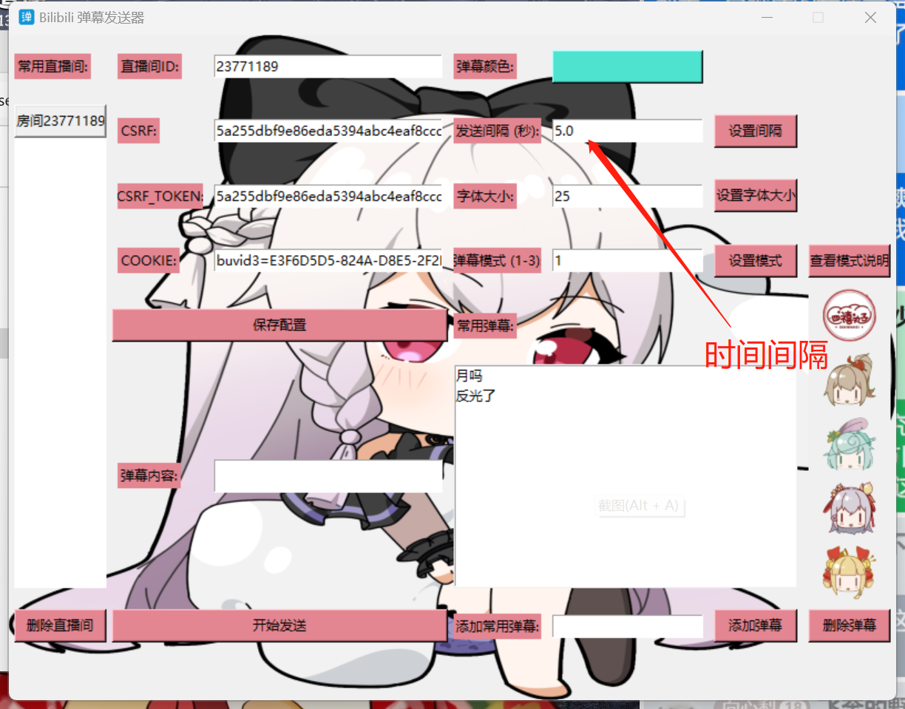
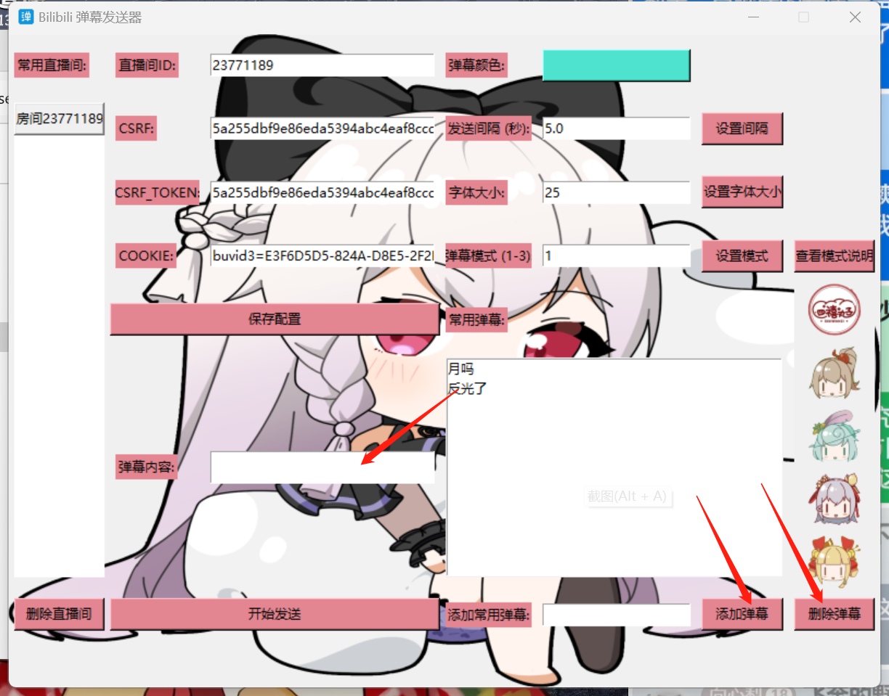
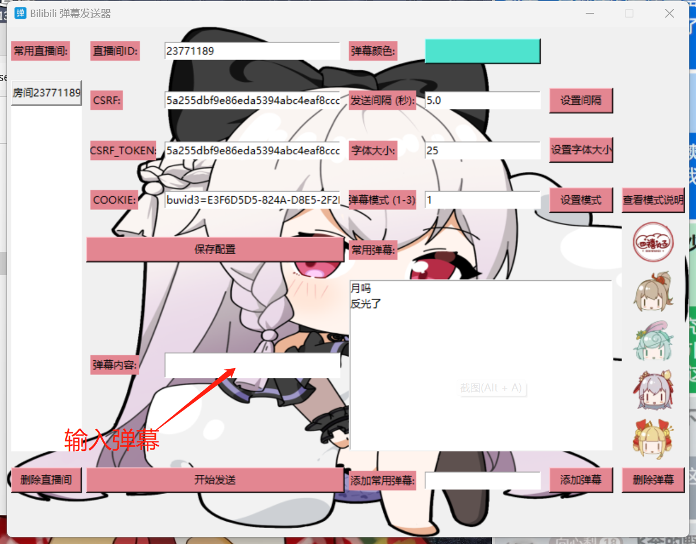

弹幕功能
一、弹幕样式
基本没用，颜色那个功能做多了，字体大小也没什么用，弹幕模式有三种，只有发送间隔有用以秒为单位
输入完成后点击设置间隔，提示成功后设置完成，点击查看弹幕模式说明后查看数字代表的弹幕模式
二、常用弹幕
对应每个直播间可以保存20个常用弹幕，下方的添加弹幕可以添加常用弹幕到常用弹幕列表中，选中后点击删除弹幕可以删除对应的弹幕，双击对应弹幕可以将弹幕内容复制到弹幕内容框中
三、弹幕输入与发送
在弹幕输入框中输入弹幕内容，点击下方开始发送，弹幕会按照设置的时间间隔进行循环发送，再点击一次停止发送
